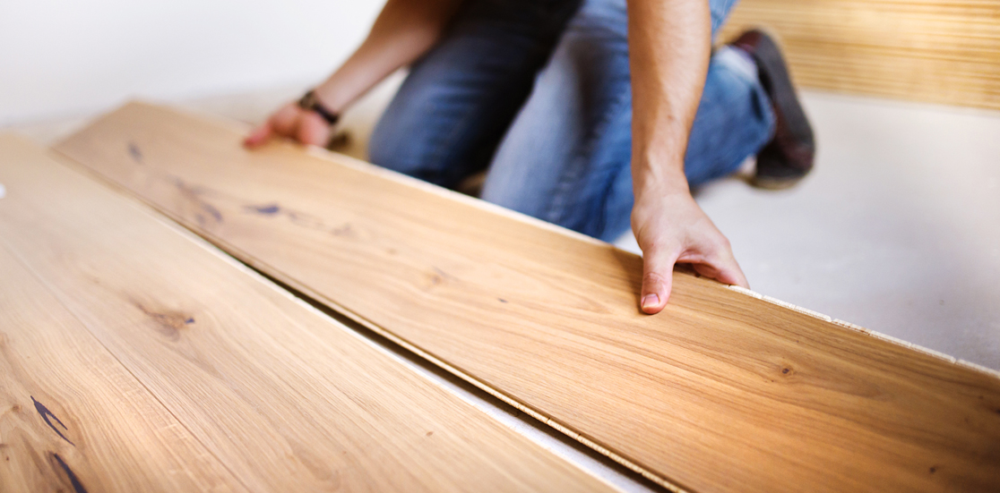
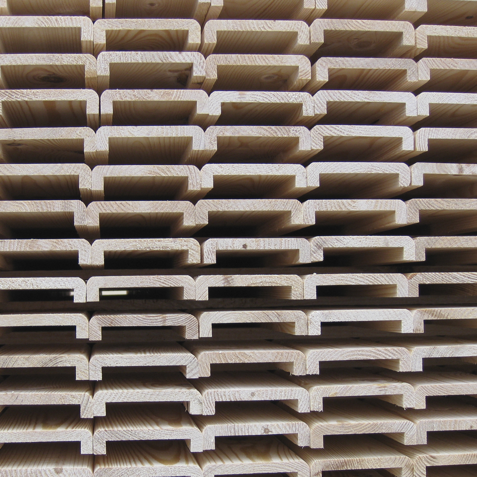

Jak dobrać drewno do konkretnego zastosowania
Porządkujemy wiedzę o tym, kiedy lepiej sprawdza się materiał konstrukcyjny, kiedy podłogowy, a kiedy produkt przeznaczony do wykończenia lub ogrodu.
W oryginalnym serwisie porady są osobnym działem. Przenosimy tę logikę do nowego układu, aby wspierać ruch informacyjny i budować wiarygodność marki.

Porządkujemy wiedzę o tym, kiedy lepiej sprawdza się materiał konstrukcyjny, kiedy podłogowy, a kiedy produkt przeznaczony do wykończenia lub ogrodu.

Dobry materiał to nie tylko odpowiedni gatunek, ale także przygotowanie technologiczne wpływające na stabilność, montaż i trwałość.